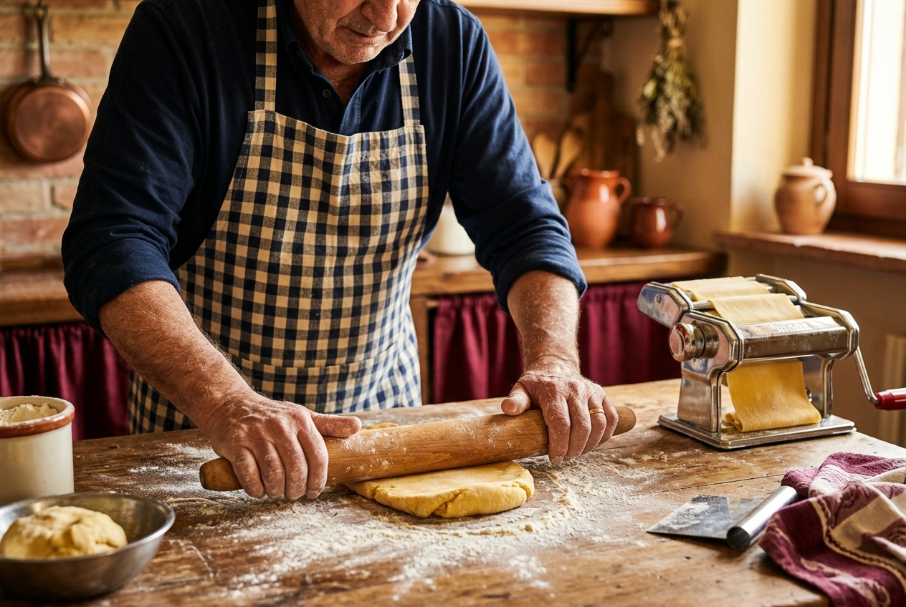
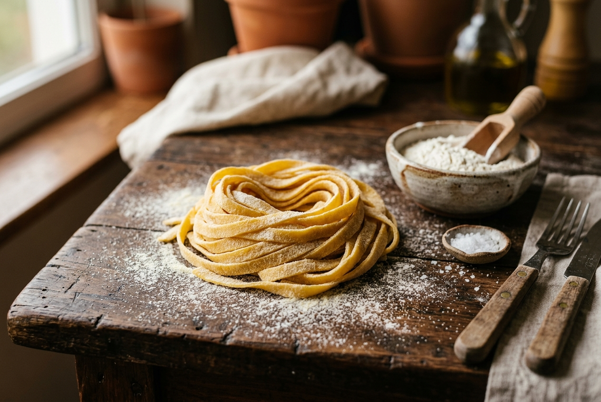

A Local Pasta Shop That
Actually Makes Pasta.
We opened our doors in 2015 with one wooden pasta board, one rolling pin, and an unwavering belief that fresh pasta — real fresh pasta — deserved to be in every local kitchen.
Today we make over a dozen pasta shapes and five house sauces every morning, supplying home cooks, neighbourhood restaurants and local markets across Melbourne. Despite our growth, nothing has changed about how we work: by hand, with care, and with the best ingredients we can source.
We are not a factory. We are your local pasta makers — and that distinction means everything.
Our Brand Story
From a home kitchen experiment to Melbourne's favourite local pasta supplier — a decade of milestones.
Started at the Farmers Market
Founder Elena Russo began selling handmade tagliatelle at the Fitzroy Farmers Market with a folding table and a borrowed pasta machine.
Opened Our First Commercial Kitchen
Demand grew beyond what a home kitchen could handle. We leased a small commercial space in Collingwood and hired our first team member.
First Restaurant Partnership
Three local restaurants put PASTA on their menus. The word spread fast — fresh pasta genuinely tasted different.
Moved to Our Artisan Quarter Home
We opened our dedicated shop and production kitchen at 14 Pasta Lane — with a tasting window, direct sales, and a small café counter.
Supplying 50+ Businesses & 500+ Families
Twelve shapes, five sauces, three seasonal specials — still made by hand, every single morning, with the same wooden rolling pin from 2015.

"I wanted Australians to experience pasta the way my Nonna made it — not from a box, not from a machine, but from hands that actually cared about what they were making."
Our Handmade Food Philosophy
Three core beliefs that guide every batch of pasta we make — from the flour we choose to the way we pack and deliver.
Ingredients First, Always
Great pasta begins with great flour. We source stone-ground durum semolina and soft-wheat '00' flour from heritage grain mills. Our eggs come from free-range farms we visit personally. If we wouldn't eat it ourselves, we don't serve it to you.
The Human Touch Matters
A machine can replicate shape — but it cannot replicate feeling. Handmade pasta has a slightly rough surface that catches sauce differently, a texture that absorbs flavour more deeply. Those small imperfections are features, not flaws.
Fresh Means Made Today
We make only what we can sell in 48 hours. No freezing, no preservatives, no extended shelf life tricks. If it wasn't made this morning, it doesn't leave our kitchen. Freshness is not a marketing word here — it is a practice.
From Dough to Dish
Our eight-step preparation process — refined over ten years of daily pasta-making.
Mill & Measure
Precision weighing of heritage flour and sea salt for every single batch.
Crack & Blend
Free-range eggs whisked with a pinch of turmeric for golden colour.
Knead by Hand
Ten minutes of firm hand-kneading to develop perfect gluten structure.
Rest & Relax
Wrapped in linen for 30 minutes to let gluten relax and flavour develop.
Roll Thin
Rolled to precise thickness — 2mm for long pasta, 1mm for filled.
Cut & Shape
Hand-cut into strips, squares or shaped into pillows — never machine-pressed.
Rest & Dry Slightly
Short air-dry on wooden racks to set shape and improve texture.
Pack & Dispatch
Packed in eco-trays, chilled and dispatched within hours of making.
Six Things That Make
PASTA Different
These are not marketing promises. They are the daily standards our team holds themselves to.
Never Frozen, Ever
From our hands to your kitchen in under 24 hours — always fresh, never frozen.
Traceable Ingredients
We know the name of every farm and mill we source from. Ask us anytime.
No Artificial Preservatives
Clean label pasta with only ingredients you recognise and can pronounce.
Eco-Conscious Packaging
Compostable trays, paper labels and recycled cardboard for all orders.
Custom Orders Welcome
Special dietary shapes, bulk custom flavours and event catering packs available.
Come Visit Our Kitchen — or Order Online
We welcome drop-in visits to our shop Tuesday through Saturday. Sample the pasta, meet the team, and take home something delicious.